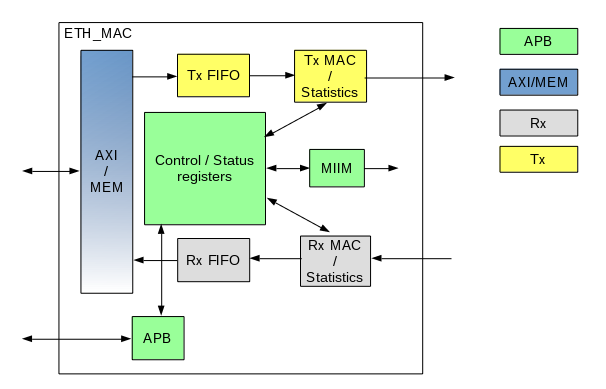

ehl_emac является контроллером MAC уровня стандарта Ethernet [1]. Блок может быть параметризован под задачи пользователя для обеспечения оптимального использования ресурсов и достижения заданной тактовой частоты (раздел "Параметры"). Управление ehl_emac осуществляется с помощью порта AHB [4]. Обмен данными с помощью порта AXI (AXI3) [5]. Коммуникация с PHY с помощью портов MII/GMII[todo: ???] и MIIM. Структурная схема ehl_emac представлена на рисунке 1.
Рисунок 1. Структурная схема ehl_emac (todo: CSR is not APB-clocked, but design Rx/Tx clocked).
Все триггеры в схеме тактируются нарастающим фронтом соответствующих синхросигналов. Все тактовые домены синхронизированы между собой внутри ehl_emac (раздел "Система доменов синхросигналов"todo:link).
Далее представлено описание основных структурных модулей ehl_emac.
_____________________________
| |
---| clk ready |---
---| reset_n err |---
---| addr rdata |---
---| wr irq |---
---| rd |
---| wdata |
|.............................|
---| w_clk w_rd |---
---| w_reset_n w_addr |---
---| w_data |
|.............................|
---| tx_clk txd |---
---| tx_reset_n tx_er |---
---| col tx_en |---
---| crs |
|.............................|
---| rx_clk |
---| rx_reset_n |
---| rx_dv |
---| rx_er |
---| rxd |
|.............................|
---| mdi mdo |---
| mdo_en |---
| mdc |---
|_____________________________|
| Название | Количество | Тип | Назначение |
|---|---|---|---|
| clk | 1 | I | Тактовая частоты интерфейса конфигурирования. |
| reset_n | 1 | I | Асинхронный сигнал сброса контроллера. |
| addr | 32 | I | |
| wr | 1 | I | |
| rd | 1 | I | |
| wdata | 32 | I | |
| ready | 1 | O | |
| err | 1 | O | |
| rdata | 32 | O | |
| MII / GMII | |||
| tx_clk | 1 | I | Тактовый сигнал передатчика. Тактирует контроллер передачи и чтение из буфера передатчика. Все триггеры в схеме тактируются нарастающим фронтом tx_clk. |
| col | 1 | I | Сигнал коллизии на линии. |
| crs | 1 | I | Сигнал активности линии. |
| rx_clk | 1 | I | Тактовый сигнал приемника. Тактирует контроллер приема и запись в буфер приемника. Все триггеры в схеме тактируются нарастающим фронтом rx_clk. |
| rx_dv | 1 | I | Признак активности приемника. |
| rx_er | 1 | I | Признак ошибки в процессе приема. |
| rxd | 8 | I | Принимаемые данные. |
| txd | 8 | O | Передаваемые данные. |
| tx_en | 1 | O | Разрешение передачи. |
| tx_er | 1 | O | Признак ошибки при передаче. |
| MDIO / MIIM | |||
| mdi | 1 | I | Вход данных. |
| mdc | 1 | O | Тактовый сигнал. |
| mdo | 1 | O | Выход данных. |
| mdo_en | 1 | O | Разрешение выхода данных. Активный уровень 1. |
| irq | 1 | O | Прерывание. Активный уровень 1. |